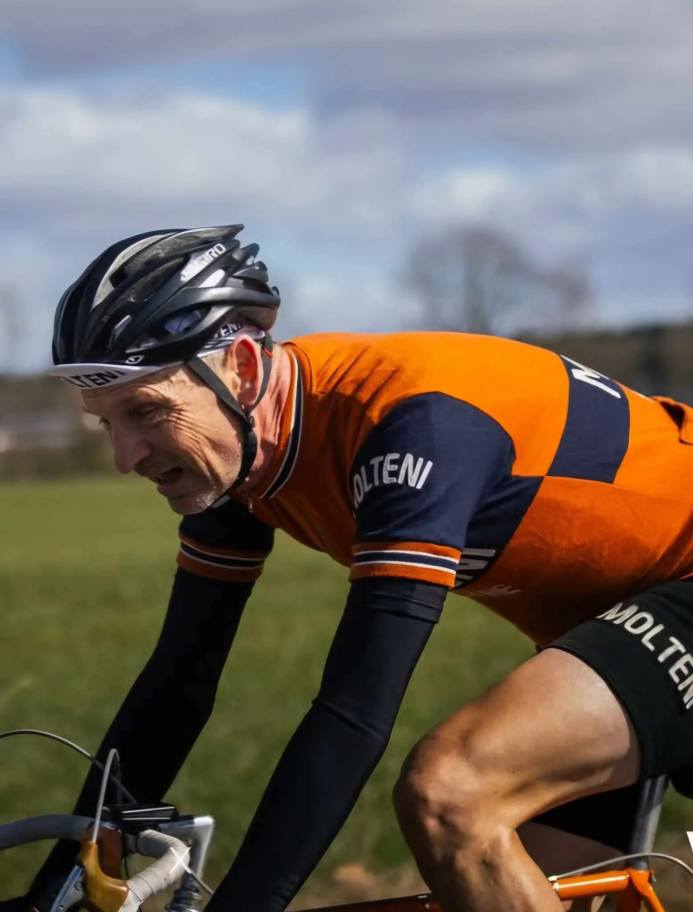

Spring Classic GRVL – Molteni løb med det hele

Squadra Molteni var sædvanen tro inviteret til forårsklassikeren Spring Classic GRVL. I år på en ny rute på den jyske højderyg – en rute på 85 km og med godt 50 km “roling stones”. Kaptajn Bjørnsteen og Løjtnant Flemming Lohmann blev 1’er og 2’er.
Squadra Molteni stillede til start med Kaptajn Bjørnsteen og Løjtnant Flemming Lohmann. Et noget beskedent hold i betragtning af, at Molteni har over 15 rytter på lønningsliste. Sportsdirektør Klaus Kjærsgaard kan dog fortælle, at adskillige ryttere er på træningslejr for at gøre sig klar til Ronde van Borum næste weekend.

“Sidste år havde jeg et udemærket løb på min franske stålcrosser, men til denne sæson har jeg opgraderet til en ægte Eddy Merckx med Campagnolo Nuovo Record; der er nu ikke noget, som slår følelsen af at betjene italiensk finmekanik i løs grus med kun en hånd på styret”, fortæller Flemming.
Lohmann og Bjørnsteen leverede et perfekt løb. Som altid var Kaptajn Bjørnsteen med helt i front, men efter godt 45 km blev han ramt af en punktering.
“Jeg lå i en rigtig god gruppe med godt flow. Så derfor var det ret uheldigt, at jeg måtte af og skifte slange”, fortæller kaptajnen.
I anden gruppe lå Lohmann og bakkede af så godt han kunne. Lohmanns gruppe passerer dog Bjørnsteen mens han er ved at sætte dæk på. Og godt indebrændt indleder kaptajnen en intens jagt. Kort før Rørbæk Sø når kaptajnen op til Lohmanns gruppe. Lohmann er på dette tidspunkt ramt af adskillige kramper, men træder ufortrødent videre.
“På en af de sidste store bakker nævner jeg, at jeg døjer med krampe i begge lår, men efter lidt coaching fra kaptajnen: “DU SKAL BARE TRÆDE TIL!” må jeg undskylde piveriet og bide tænderne sammen…” fortæller Lohmann.
Med ca 30 km til mål rykker Bjørnsteen fra gruppen og indleder jagten på gruppen han sad i inden punkteringen. Med godt 8 km til mål når Bjørnsteen op. Efter en hurtig gel og en slurk vand, rykker kaptajnen væk på næstsidste bakke – og 7 håbefulde ryttere på spritnye state-of-the-art carbongravelmaskiner, må se en uldklædt Kaptajn Bjørnsteen på en 50 år gammel stållandevejsracer glide afsted i en sky af støv.

Kaptajnen Bjørnsteen kører solo i mål til en sikker sejr i stålklassen og en top 15 i alt. Flemming Lohmann kæmpende sig i mål til sikker 2. plads i stålklassen, og en top 20 i alt.

Næste løb for Squadra Molteni bliver Ronde van Borum på søndag, hvor holdet stiller til start med 6 ryttere.
Løbet bliver sendt live på Eurosport2 og MAX